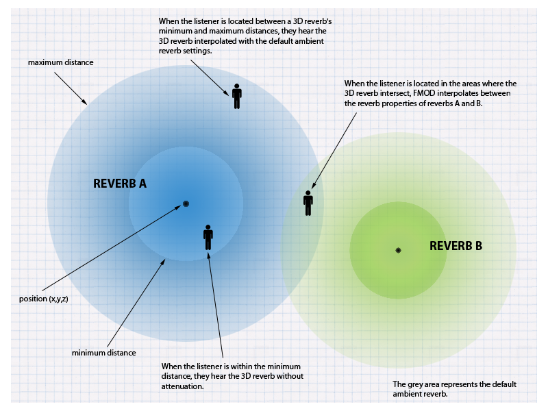
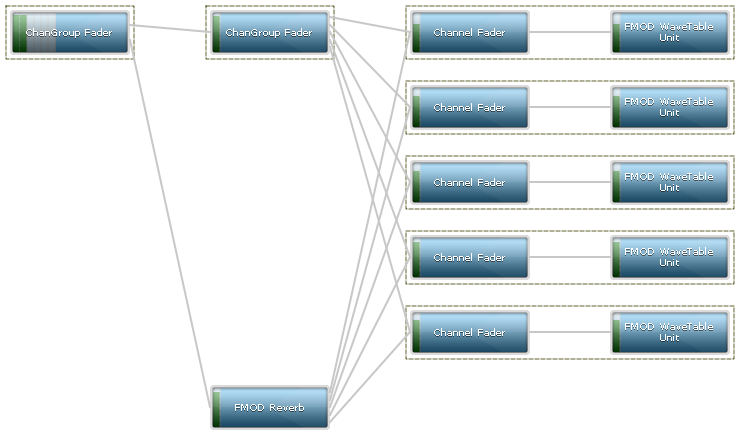

FMOD API User Manual 2.01
The FMOD Core API is a programmer API that is intended to cover the basics / primitives of sound. This includes concepts such as 'Channels', 'Sounds', 'DSP', 'ChannelGroups', 'Sound Groups', 'Recording' and concepts for 3D Sound and occlusion.
It is standalone and does not require any sound designer tools to interface with. The features are all implemented by the programmer in code.
You can extend the functionality of FMOD through the use of plugins, each plugin type (Codec, DSP and Output) has its own API you can use. Whether you have developed the plugin yourself or you are using one from a third party there are two ways you can integrate it into FMOD.
When the plugin is available to you as source code, you can hook it up to FMOD by including the source file and using one of the plugin registration APIs System::registerCodec, System::registerDSP or System::registerOutput. Each of these functions accept the relevant description structure that provides the functionality of the plugin. By convention plugin developers will create a function that returns this description structure for you, for example FMOD_AudioGaming_AudioMotors_GetDSPDescription is the name used by one of our parter plugins (it follows the form of "FMOD_[CompanyName]_[ProductName]_Get[PluginType]Description"). Alternatively, if you don't have source code, but you do have a static library (such as .lib or .a) it's almost the same process, link the static library with your project, then call the description function passing the value into the registration function.
Another way plugin code is distributed is via a prebuilt dynamic library (such as .so, .dll or .dylib), these are even easier to integrate with FMOD than static libraries. First ensure the plugin file is in the working directory of your application, this is often the same location as the application executable. In your code call System::loadPlugin passing in the name of the library and that's all there is to it. Under the hood FMOD will open the library searching for well known functions similar to the description functions mentioned above, once found the plugin will be registered ready for use.
This section will give a broad overview of FMOD Core API features.
FMOD Core API has an automatic configuration feature, which makes it simple to start.
At the most basic level, creating the System object and calling System::init on it. This is all that is needed. A more detailed description of initialization can be found in the FMOD Core API Getting Started white paper.
The sound card can be manually selected, using the System::setDriver function. More settings can be configured, such as the mixing rate of the FMOD system, the resampling method, or the speaker mode with System::setSoftwareFormat. When modifying the mixer settings, this only adjusts the internal mixing format. At the end, the audio stream is always converted to the settings that are set by the user (ie the settings in the control panel in Windows, or the standard 7.1/48khz output mode on Xbox One or PS4).
FMOD Core API has automatic sound card detection and recovery during playback. If a new device is inserted after initialization, FMOD will seamlessly jump to it, assuming it is the higher priority device. An example of this would be a USB headset being plugged in.
If the device that is being played on is removed (such as a USB audio device), it will automatically jump to the device considered next most important (ie on Windows, it would be the new 'default' device).
If a device is inserted, then removed, it will jump to the device it was originally playing on.
The programmer can override the sound card detection behavior, with a custom callback. This is the FMOD_SYSTEM_CALLBACK_DEVICELISTCHANGED callback.
FMOD Core API has support for user created output plugins. A developer can create a plugin to take FMOD audio output to a custom target. This could be a hardware device, or a non standard file/memory/network based system.
An output mode can run in real-time, or non real-time which allows the developer to run FMOD's mixer/streamer/system at faster or slower than real-time rates.
See System::registerOutput documentation for more.
Plugins can be created inline with the application, or compiled as a stand-alone dynamic library (ie .dll or .so)
FMOD Core API has native/built in code to support many file formats out of the box. WAV, MP3 and Ogg Vorbis are supported by default, but many more obscure formats like AIFF, FLAC and others. Sequenced formats that are played back in realtime with a real time sequencer, are included. MIDI/MOD/S3M/XM/IT are examples of these.
A more comprehensive list can be found in the FMOD_SOUND_TYPE list.
FMOD also supports an optimal format for games, called FSB (FMOD Sound Bank).
Many sound file formats are not well suited to games. They are not efficient, and can lead to lots of random file access, large memory overhead, and slow load times.
FSB format benefits are:
No-seek loading. FSB loading can be 3 continuous file reads. 1. Main header read. 2. Sub-sound metadata. 3. Raw audio data.
'Memory point' feature. An FSB can be loaded into memory by the user, and simply 'pointed to' so that FMOD uses the memory where it is, and does not allocate extra memory. See FMOD_OPENMEMORY_POINT.
Low memory overhead. A lot of file formats contain 'fluff' such as tags, and metadata. FSB stores information in compressed, bit packed formats for efficiency.
Multiple sounds in 1 file. Thousands of sounds can be stored inside 1 file, and selected by the API function Sound::getSubSound.
Efficient Ogg Vorbis. FSB strips out the 'Ogg' and keeps the 'Vorbis'. 1 codebook can be shared between all sounds, saving megabytes of memory (compared to loading .ogg files individually).
FADPCM codec support. FMOD supports a very efficient, ADPCM variant called FADPCM which is many times faster than a standard ADPCM decoder (no branching), and is therefore very efficient on mobile devices. The quality is also far superior than most ADPCM variants, and lacks the 'hiss' notable in those formats.
FMOD Core API has support for user created file format plugins. A developer can create callbacks for FMOD to call when System::createSound or System::createStream is executed by the user, or when the decoding engine is asking for data.
Plugins can be created inline with the application, or compiled as a stand-alone dynamic library (ie .dll or .so)
See the System::registerCodec documentation for more.
The simplest way to get started, and basic functionality of FMOD Core API - is to initialize the FMOD system, load a sound, and play it. That's it!
Refer to the Getting Started white paper on how to initialize and load/play a sound with the FMOD Core API.
Look at the play sound example to refer to sample code for the simple playback of a sound file.
FMOD Core API benefits from over 15 years of use, in millions of end user devices, causing the evolution of a highly stable and low latency mixing/streaming engine.
Streaming is the ability to take a large file, and read/play it in realtime in small chunks at a time, avoiding the need to load the entire file into memory. This is typically reserved for
The user can simply play a sound as a 'stream' by adding the FMOD_CREATESTREAM flag to the System::createSound function, or using the System::createStream function. The 2 options equate to the same end behavior.
FMOD streaming supports internet addresses. Supplying http or https in the filename will switch FMOD to streaming using native http, shoutcast or icecast.
Playlist files (such as ASX/PLS/M3U/WAX formats) are supported, including redirection.
Proxy specification and authentication are supported, as well as real-time shoutcast stream switching, metadata retrieval and packet loss notification.
Streaming behavior can be adjusted in several ways. As streaming a file takes 2 threads, one for file reading, and one for codec decoding/decompression. File buffer sizes can be adjusted with System::setStreamBufferSize and codec decoding buffer size can be adjusted with FMOD_CREATESOUNDEXINFO decodeBufferSize member, or FMOD_ADVANCEDSETTINGS::defaultDecodeBufferSize.
For shorter sounds, rather than decompressing the sound into memory, the user may wish to play the sound in memory, as is.
This is more efficient than a stream, as it does not require disk access, or extra threads to read or decode. A stream has a limit of 1 sound at a time, but a compressed sample does not. It can be played multiple times simultaneously.
If a platform supports a hardware format like AT9 on PS4, or XMA on Xbox One, then it is the best solution to use these codecs, as the decoding of the data is handled by separate media chips, taking the majority of the processing off the CPU.
Refer to the Getting Started white paper on how to use the FMOD_CREATECOMPRESSEDSAMPLE flag and configuration of codec memory.
See the relevant Platform Details section for details on platform specific audio formats.
Loading a sound with System::createSound will by default, cause a sound to be decompressed into memory, and played back as PCM format.
PCM data is just raw uncompressed sound data, for more information see Sample Data.
Decompressed / uncompressed samples uses little to no CPU time to process. PCM data is the same format that the FMOD mixing engine uses, and the sound device itself. This may be desirable, if you have enough memory, on a mobile device with limited CPU cycles.
Decompressed PCM data uses a lot more memory than Vorbis encoded FSB for example. It could be up to 10x more.
A typical use case for mobile developers: Compress the sound heavily for distribution (to reduce the download size), then decompress it at start-up/load time, to save CPU time, rather than playing it compressed.
FMOD Core includes a 'virtual voice system'. It allows the developer to play hundreds or even thousands of sounds at once, but only have a small number actually producing sound. The remainder are 'virtual' or emulated with a simple position update, and are not heard, and don't consume CPU time.
As an example: a dungeon may have 200 torches burning on the wall in various places but only the loudest torches will be really audible. FMOD will dynamically make voices 'virtual' or 'real' depending on real time audibility calculations (based on distance/volume/priority/occlusion).
A sound which is playing far away, or with a low volume will become virtual, and will change to a real voice when it comes closer, or becomes louder due to Channel or ChannelGroup API calls.
Read more about the virtual voice system on the Virtual Voice white paper.
Grouping voices so that they can have a single effect on them, can be achieved with what is typically called a 'bus' or a 'submix'. In FMOD Core, channels are grouped into 'Channel Groups', which are the same as a bus or submix.
An effect can be added to a ChannelGroup, and it will only process a sub-mixed result of multiple channels, rather than processing every channel. This reduces CPU usage greatly.
The volume of a ChannelGroup can be altered, which allows for master volume groups. The volume is scaled based on a fader DSP inside a ChannelGroup. All Channels and Channel Groups have a fader DSP by default.
ChannelGroups are hierarchical. ChannelGroups can contain ChannelGroups, which can contain other ChannelGroups and Channels.
Many attributes can be applied to a ChannelGroup, including things like speaker mix, and 3D position. A whole group of Channels, and the ChannelGroups below them, can be positioned in 3D with 1 call, rather than trying to position all of them individually.
'Master Volume', 'SFX Volume' and 'Music Volume' are typical settings in a game. Setting up an 'SFX' ChannelGroup, and a 'Music' ChannelGroup, and having them children of the master channel group (see System::getMasterChannelGroup)
FMOD Core API has support for a variety of features that allow sounds to be placed in 3D space, so that they move around the listener as part of an environment, by panning, pitch shifting with doppler, and attenuating with volume scaling or even special filtering.
FMOD 3D spatialization features:
To load a sound as 3D simply add the FMOD_3D flag to the System::createSound function, or the System::createStream function.
The next 3 important things to do are:
Read more about 3D sound in the 3D Sound white paper or the Spatial Audio white paper.
FMOD Core API supports the supply of polygon mesh data, that can be processed in realtime to create the effect of occlusion in a real 3D world. In real world terms, the user can stop sounds travelling through walls, or even confine reverb inside a geometric volume so that it doesn't leak out into other areas.
To use the FMOD Geometry Engine, create a mesh object with System::createGeometry. Then add polygons to each mesh with Geometry::addPolygon. Each object can be translated, rotated and scaled to fit your environment.
FMOD Core API has the ability to record directly from an input into an FMOD sound object.
This sound can then be played back after it has been recorded, or the raw data can be retrieved with Sound::lock and Sound::unlock functions.
The sound can also be played while it is recording, to allow realtime effects. A simple technique to achieve this is to start recording, then wait a small amount of time, like 50ms, then play the sound. This will keep the play cursor just behind the record cursor. See the record example for source and information on how to do this.
FMOD Core API has native/built in code to support many special effects out of the box, such as low-pass, compressor, reverb and parametric EQ. A more comprehensive list can be found in the FMOD_DSP_TYPE list.
An effect can be created with System::createDSPByType and added to a Channel or ChannelGroup with ChannelControl::addDSP.
FMOD Core API has 2 types of physical reverb available, and a virtual 3d reverb system which can be used to simulate hundreds of environments or more, with only 1 physical reverb.
A built in, high quality I3DL2 standard compliant reverb, which is used for a fast, configurable environment simulation, and is used for the 3D reverb zone system, described below.
To set an environment simply, use System::setReverbProperties. This lets you set a global environment, or up to 4 different environments, which all sounds are affected by.
Each channel can have a different reverb wet mix by setting the level in ChannelControl::setReverbProperties.
Read more about the I3DL2 configuration in the Reverb Notes section of the documentation. To avoid confusion when starting out, simply play with the pre-set list of environments in FMOD_REVERB_PRESETS.
There is also an even higher quality Convolution Reverb which allows a user to import an impulse response file (a recording of a impulse in an environment which is used to convolve the signal playing at the time), and have the environment sound like it is in the space the impulse was recorded in.
This is an expensive to process effect, so FMOD supports GPU acceleration to offload the processing to the graphics card. This greatly reduces the overhead of the effect to being almost negligible. GPU acceleration is supported on Xbox One and PS4 platforms.
Convolution reverb can be created with System::createDSPByType with FMOD_DSP_TYPE_CONVOLUTIONREVERB and added to a ChannelGroup with ChannelControl::addDSP. It is recommended to only implement 1 or a limited number of these effects and place them on a sub-mix/group bus (a ChannelGroup), and not per channel.
A Virtual 3D reverb zone system is supported, using the main built-in system I3DL2 reverb.
Virtual '3D reverb spheres' can be created and placed around a 3D world, in unlimited numbers, causing no extra CPU expense.
As the listener travels through these spheres, FMOD will automatically morph and attenuate the levels of the system reverb to make it sound like you are in different environments as you move around the world.
Spheres can be overlapped and based on where the listener is within each spheres. FMOD will morph the reverb to the appropriate mix of environments.

A 3D reverb sphere can be created with System::createReverb3D and the position set with Reverb3D::set3DAttributes. To set a sphere's reverb properties, Reverb3D::setProperties can be used.
For more information on the 3D reverb zone system, and implementation information, read the 3D Reverb white paper.
FMOD Core API has support for user created DSP plugins. A developer can either load a pre-existing plugin, or create one inside the application, using 'callbacks'.
Callbacks can be specified by the user, for example when System::createDSP is called, or when the DSP runs and wants to process PCM data inside FMOD's mixer.
Plugins can be developed inline with the application, or compiled as a stand-alone dynamic library (ie .dll or .so)
To load a pre-existing plugin executable, use the System::loadPlugin function.
To implement callbacks directly in a program, System::registerDSP can be used.
To create a stand alone dynamic library, use the same callbacks, but export the symbols through a the FMOD_DSP_DESCRIPTION struct, via the exported FMODGetDSPDescription function.
See the DSP Plugin API white paper on how to make a plugin, and /examples/fmod_gain.cpp in the API distribution as a working example.
FMOD Core API runs on a modular synth architecture, which allows connections of signal processing nodes (the 'FMOD DSP' concept. See the FMOD DSP Class to be joined together to create deeper more complicated audio signals and flow.
A directed graph processing tree allows the signal to flow from 'generators' (a sound playing through from System::playSound, or a DSP creating sound from System::playDSP for example), to other nodes, mixing together until they reach the head node, where the final result is sent to the sound card.

A visual representation taken directly from the FMOD Profiler tool (in the /bin directory of the API distribution).
FMOD typically processes the sound in the graph, in blocks of 512 samples (10ms) on some platforms, or 1024 on other platforms (21ms). This is the granularity of the system, and affects how smooth parameter changes, such as pitch or volume will heard.
FMOD pre-built DSP effects can be inserted into the graph with functions like DSP::addInput and DSP::disconnectFrom.
For detailed information read the DSP Architecture and Usage white paper.
FMOD Core API commands are thread safe and queued. They get processed either immediately, or in background threads, depending on the command.
By default, things like initialization, and loading a sound are processed on the main thread.
Mixing, streaming, geometry processing, file reading and file loading are or can be done in the background, in background threads. Every effort is made to avoid blocking the main application's loop unexpectedly.
One of the slowest operations is loading a sound. To place a sound load into the background so that it doesn't affect processing in the main application thread, the user can use the FMOD_NONBLOCKING flag in System::createSound or System::createStream.
Thread affinity is configurable on some platforms.
For detailed information about FMOD and threads please refer to the Threads and Thread Safety white paper.
The FMOD Core API has evolved over the years to have a comprehensive suite of effects and codecs with minimal overhead for memory and CPU.
All platforms come with performance saving features. For example vector optimized floating point math is used heavily. Some of the technologies used include SSE, NEON, AVX, VMX, and VFP assembler.
Typically the most expensive part of sound playback is real-time compressed sample playback.
The FMOD API will allow configuration of how many sounds should be audible at once, to reduce CPU overhead. This is configurable as mentioned in the Compressed sample playback section of this document, using the System::setAdvancedSettings function.
Adjusting the sample rate quality, resampling quality, number of mixed voices and decoded voices is configurable to get the best scalability for your application.
To find out more about configuring FMOD to save CPU time, refer to the CPU Performance white paper, or to get an idea about Core performance figures on various platforms, refer to the Performance Reference section of the documentation.
The FMOD Core API caters to the needs of applications and their memory and file systems. A file system can be 'plugged in' so that FMOD uses it, and not its own system, as well as memory allocation.
To set up a custom file system is a simple process of calling System::setFileSystem.
The file system handles the normal cases of open, read, seek, close, but adds an extra feature which is useful for prioritized/delayed file systems, FMOD supports the FMOD_FILE_ASYNCREAD_CALLBACK callback, for deferred, prioritized loading and reading, which is a common feature in advanced game streaming engines.
An async read callback can immediately return without supplying data, then when the application supplies data at a later time, even in a different thread, it can set the 'done' flag in the FMOD_ASYNCREADINFO structure to get FMOD to consume it. Consideration has to be made to not wait too long or increase stream buffer sizes, so that streams don't audibly stutter/skip.
To set up a custom memory allocator is done by calling Memory_Initialize. This is not an FMOD class member function because it needs to be called before any FMOD objects are created, including the System object.
To read more about setting up memory pools or memory environments, refer to the Memory Management white paper.
Driving a spatializer using the Core API requires setting the data parameter associated with 3D attributes, this will be a data parameter of type: FMOD_DSP_PARAMETER_DATA_TYPE_3DATTRIBUTES or FMOD_DSP_PARAMETER_DATA_TYPE_3DATTRIBUTES_MULTI. The Studio::System sets this parameter automatically if an Studio::EventInstance position changes, however if using the core System you must set this DSP parameter explicitly.
This will work with our 3D spatializer, the object spatializer, the resonance source / soundfield spatializers and any other third party plugins that make use of the FMOD spatializers.
Attributes must use a coordinate system with the positive Y axis being up and the positive X axis being right (left-handed coordinate system). FMOD will convert passed in coordinates from right-handed to left-handed for the plugin if the System was initialized with the FMOD_INIT_3D_RIGHTHANDED flag.
The absolute data for the FMOD_DSP_PARAMETER_3DATTRIBUTES is straight forward, however the relative part requires some work to calculate.
/*
This code supposes the availability of a maths library with basic support for 3D and 4D vectors and 4x4 matrices:
// 3D vector
class Vec3f
{
public:
float x, y, z;
// Initialize x, y & z from the corresponding elements of FMOD_VECTOR
Vec3f(const FMOD_VECTOR &v);
};
// 4D vector
class Vec4f
{
public:
float x, y, z, w;
Vec4f(const Vec3f &v, float w);
// Initialize x, y & z from the corresponding elements of FMOD_VECTOR
Vec4f(const FMOD_VECTOR &v, float w);
// Copy x, y & z to the corresponding elements of FMOD_VECTOR
void toFMOD(FMOD_VECTOR &v);
};
// 4x4 matrix
class Matrix44f
{
public:
Vec4f X, Y, Z, W;
};
// 3D Vector cross product
Vec3f crossProduct(const Vec3f &a, const Vec3f &b);
// 4D Vector addition
Vec4f operator+(const Vec4f &a, const Vec4f &b);
// Matrix multiplication m * v
Vec4f operator*(const Matrix44f &m, const Vec4f &v);
// 4x4 Matrix inverse
Matrix44f inverse(const Matrix44f &m);
*/
void calculatePannerAttributes(const FMOD_3D_ATTRIBUTES &listenerAttributes, const FMOD_3D_ATTRIBUTES &emitterAttributes, FMOD_DSP_PARAMETER_3DATTRIBUTES &pannerAttributes)
{
// pannerAttributes.relative is the emitter position and orientation transformed into the listener's space:
// First we need the 3D transformation for the listener.
Vec3f right = crossProduct(listenerAttributes.up, listenerAttributes.forward);
Matrix44f listenerTransform;
listenerTransform.X = Vec4f(right, 0.0f);
listenerTransform.Y = Vec4f(up, 0.0f);
listenerTransform.Z = Vec4f(forward, 0.0f);
listenerTransform.W = Vec4f(listener.position, 1.0f);
// Now we use the inverse of the listener's 3D transformation to transform the emitter attributes into the listener's space:
Matrix44f invListenerTransform = inverse(listenerTransform);
Vec4f position = invListenerTransform * Vec4f(emitterAttributes.position, 1.0f);
// Setting the w component of the 4D vector to zero means the matrix multiplication will only rotate the vector.
Vec4f forward = invListenerTransform * Vec4f(emitterAttributes.forward, 0.0f);
Vec4f up = invListenerTransform * Vec4f(emitterAttributes.up, 0.0f);
Vec4f velocity = Vec4f(listenerAttributes.velocity, 0.0f) + invListenerTransform * Vec4f(emitterAttributes.velocity, 0.0f);
// We are now done computing the relative attributes.
position.toFMOD(pannerAttributes.relative.position);
velocity.toFMOD(pannerAttributes.relative.forward);
up.toFMOD(pannerAttributes.relative.up);
velocity.toFMOD(pannerAttributes.relative.velocity);
// pannerAttributes.absolute is simply the emitter position and orientation:
pannerAttributes.absolute = emitterAttributes;
}
When using FMOD_DSP_PARAMETER_3DATTRIBUTES_MULTI, you will need to call calculatePannerAttributes for each listener filling in the appropriate listener attributes.
Set this on the DSP by using DSP::setParameterData with the index of the FMOD_DSP_PARAMETER_DATA_TYPE_3DATTRIBUTES, you will need to check with the author of the DSP for the structure index. Pass the data into the DSP using DSP::setParameterData with the index of the 3D Attributes, FMOD_DSP_PARAMETER_DATA_TYPE_3DATTRIBUTES or FMOD_DSP_PARAMETER_DATA_TYPE_3DATTRIBUTES_MULTI